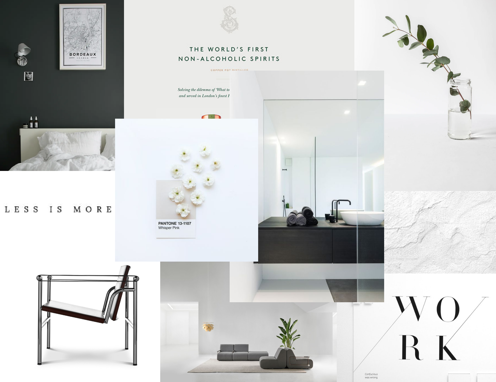

Til dette tema var formålet at lære de generelle begreber og redskaber som høre til det at arbejde som multimediedesigner, altså fundamentet for hele uddannelsen. Dette omhandlede design af digitalebrugergrænseflader, digital indholdsproduktion, digitalkommunikation og responsivt webdesign. Hertil lære at arbejde med html, css, photoshop og Adobe XD. For at lære alle færdighederne fik vi til opgave at opstille og designe en hjemmeside ud fra givet wireframes og en tildelt stilart. Jeg fik minimalisme.
Min løsning til opgaven var at programmere en hjemmeside omhandlende et selvvalgt emne, jeg valgte interiør, og med stilarten minimalisme ud fra det tildelte wireframe.
For at vise kontinuitet og genkendelse gennem min hjemmeside lavede jeg et moodboard som skulle afspejle temaet af farver og min stilart.
Det eneste jeg skulle finde af content til min hjemmeside var billeder og overskrifter til wireframen. Den sværeste del ved denne opgave var at finde royaltyfrie billeder. Heldigvis fik vi gode redskaber af lærene, dette var links til hjemmesider som har royaltyfrie billeder. Det var heller ikke nemt at finde på overskrifter som passede til ens emne, men her måtte man bruge fantastien og være kreativ.
For at få wireframet til at stå præcis som det skulle krævede det at vi lærte om grids. Hertil var mange grid- og flexøvelser som virkelig sat en ind i hvordan grids og flex virker og hvilket fordele der var ved at bruge de forskellige.
En ekstra detalje til hjemmesiden var at designe et ikon og sørge for at få det til at vise oppe ved fanebladet. Dette var en kompliceret process, men blev mulig til sidst.
Det vigtigste ved denne opgave var at få en forståelse for grundprincipperne ved multimediedesign. Design delen lavede jeg gennem mit moodboard hvor jeg lagde grundlinjen for stilen. Dertil lavede jeg også mit splashbillede og ikon til hjemmesiden, her fik jeg øvet kompetencer i Photoshop. Derudover fik jeg også øvet ideer til content gennem overskrifter til mit valgte emne, dette gav en smagsprøve på konceptudvikling.
Programmeringsdelen fik jeg øvet da jeg skulle alt op i forhold til wireframen, her fandt man ud af og øvet grundstenene for at lave en hjemmeside, både i html og css.